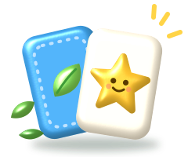
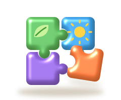
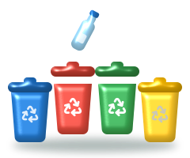
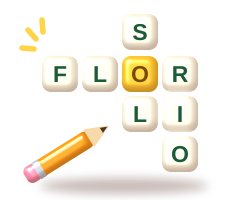
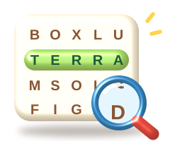

Escolha seu jogo
O Tito vai jogar com você!

Jogo da memória Ache os pares de figuras para todos
Quebra-cabeça Monte a cena da natureza para todos
Lixeira certa Separe o lixo pelas cores para todos Quiz Responda e ganhe estrelas para quem já lê
Palavras cruzadas Descubra as palavras pelas dicas para quem já lê
Caça-palavras Encontre as palavras escondidas para quem já lê